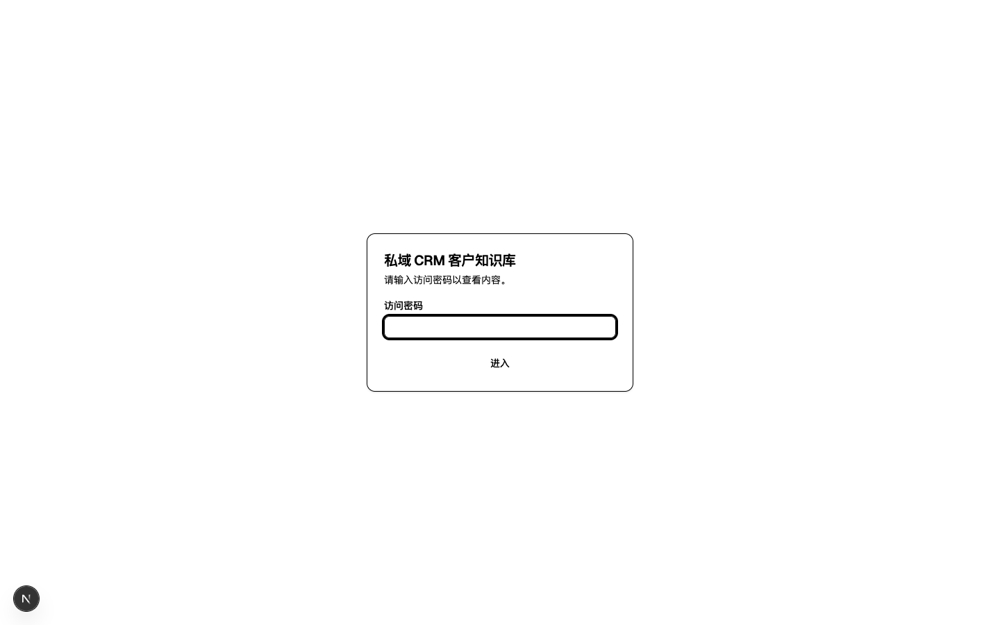
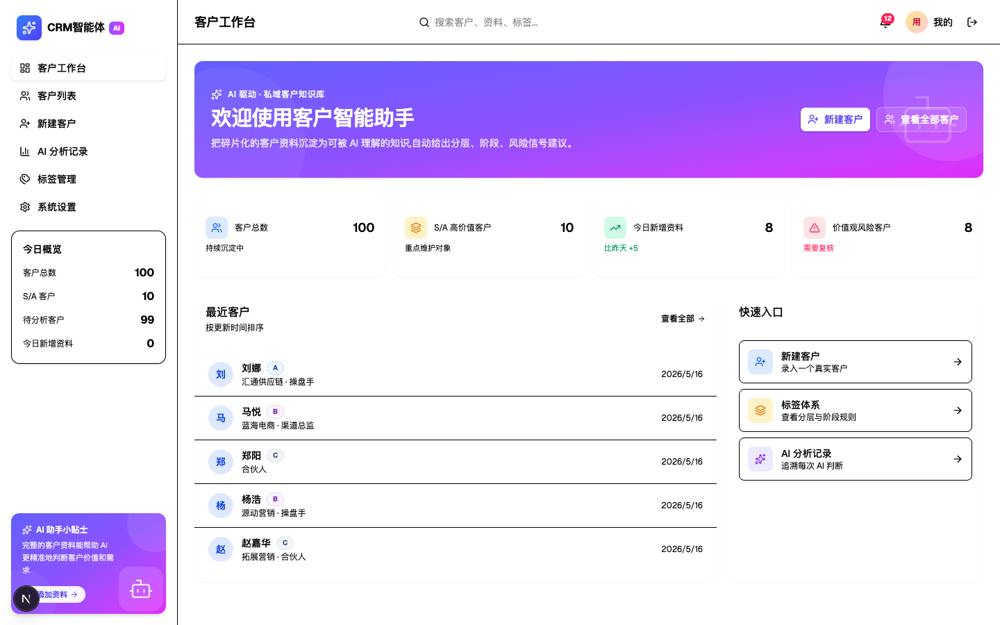
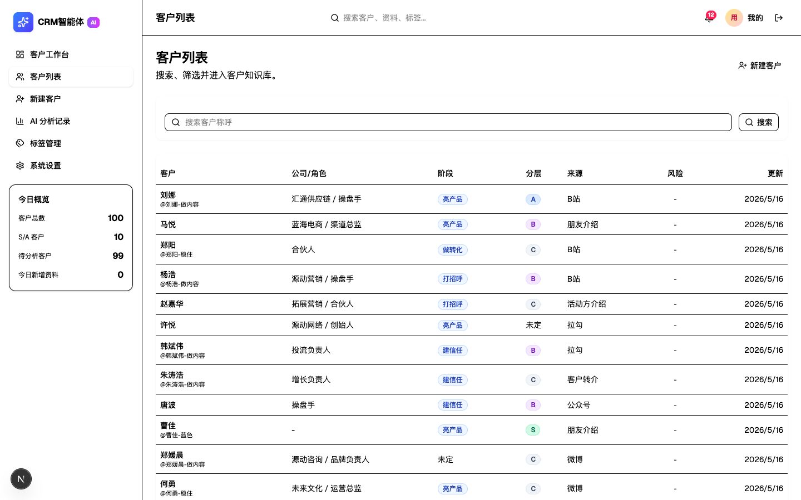
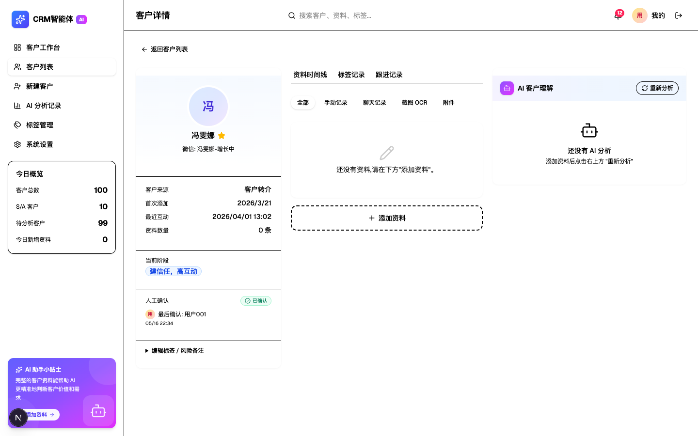
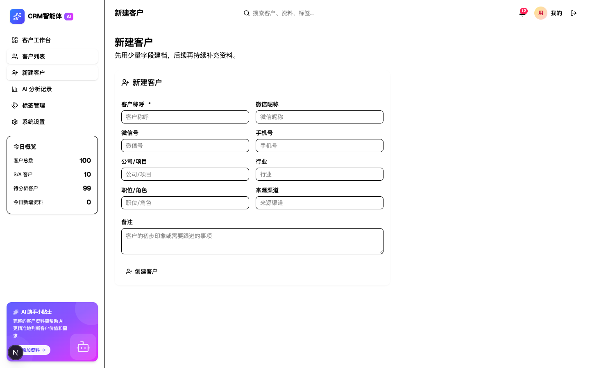
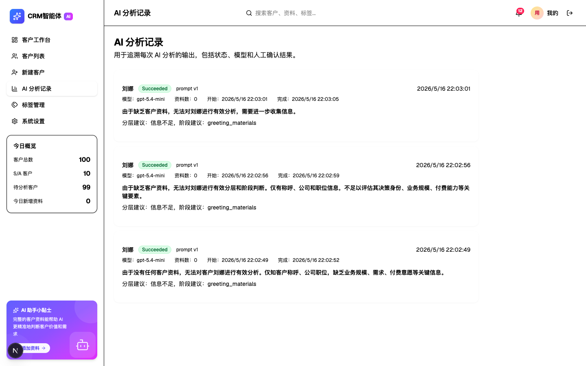
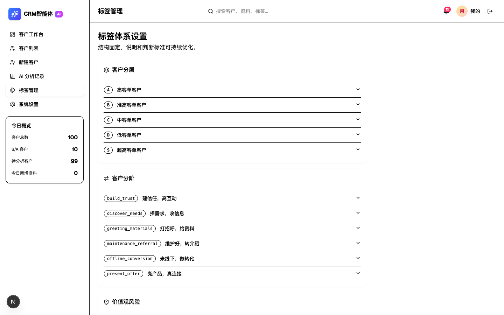

私域 CRM 客户知识库 - 使用手册
1. 系统简介
私域 CRM 客户知识库是一个面向私域业务团队的客户关系管理系统。核心功能包括：
- 客户建档：记录客户基本信息、微信资料、公司背景
- 资料沉淀：按时间线整理聊天记录、截图 OCR、附件等客户资料
- AI 分析：利用 AI 自动分析客户价值、所处阶段、潜在风险
- 分层分阶：通过标签体系对客户进行分层（S/A/B/C/D）和分阶管理
- 风险预警：识别价值观风险客户，避免业务损失
2. 登录系统
打开系统地址后，会看到登录页面：

输入访问密码，点击「进入」即可登录系统。
3. 客户工作台（首页）
登录后进入客户工作台首页：

首页包含以下模块：
3.1 数据概览
顶部四个统计卡片展示：
- 客户总数：系统中所有客户数量
- S/A 高价值客户：重点维护的高价值客户数量
- 今日新增资料：当天新上传的客户资料数
- 价值观风险客户：被标记为存在价值观风险的客户数
3.2 最近客户
展示最近更新的 5 位客户，点击可查看详情。
3.3 快速入口
- 新建客户：快速跳转到客户创建页面
- 标签体系：查看客户分层和分阶规则
- AI 分析记录：追溯每次 AI 分析的结果
4. 客户列表
点击左侧导航「客户列表」进入客户管理页面：

4.1 列表字段
表格展示客户核心信息：
- 客户：客户称呼（带微信昵称备注）
- 公司/角色：所属公司和职位
- 阶段：当前所处业务阶段
- 分层：客户价值分层（S/A/B/C/D）
- 来源：客户获取渠道
- 风险：是否存在价值观风险
- 更新：最后更新时间
4.2 搜索
顶部搜索框支持按客户称呼快速查找。
4.3 新建客户
点击右上角「新建客户」按钮，跳转到客户创建页面。
5. 客户详情
点击列表中的客户，进入客户详情页：

详情页采用三栏布局：
5.1 左侧 - 客户档案
- 头像与称呼：客户标识信息
- 分层徽章：S/A/B/C/D 分层标签，S 层为金色高亮
- 基本信息：微信昵称、公司、职位、来源渠道
- 关键数据：首次添加时间、最近互动时间、资料数量
- 当前阶段：可视化展示所处业务阶段
- 人工确认：记录最后确认人和确认时间
- 标签编辑：编辑分层、阶段、风险备注
5.2 中间 - 资料时间线
按时间分组展示客户的所有资料：
- 手动记录：人工录入的笔记和观察
- 聊天记录：微信聊天导出内容
- 截图 OCR：图片文字识别结果
- 附件：上传的文件资料
点击「+ 添加资料」可为客户补充新内容。
5.3 右侧 - AI 客户理解
展示 AI 对该客户的综合分析：
- 价值评估：客户付费能力和业务价值判断
- 阶段判断：当前所处销售/运营阶段
- 风险信号：潜在风险提醒
- 下一步建议：AI 给出的跟进建议
点击「重新分析」可基于最新资料重新生成分析结果。
6. 新建客户
点击「新建客户」进入创建页面：

填写以下信息：
- 客户称呼*：必填，用于系统内标识
- 微信昵称：客户在微信中的昵称
- 微信号：可选，便于精准查找
- 手机号：可选，联系方式
- 公司/项目：客户所在公司或参与项目
- 行业：所属行业领域
- 职位/角色：在公司的职位或角色
- 来源渠道：如何获取该客户（朋友介绍、公众号、活动等）
- 备注：初步印象或需要跟进的事项
填写完成后点击「创建客户」保存。
7. AI 分析记录
点击「AI 分析记录」查看所有 AI 分析历史：

每条记录展示：
- 分析状态：Succeeded / Failed / Pending
- 客户名称：被分析的客户
- 模型版本：使用的 AI 模型
- 资料数：分析时参考的资料数量
- 开始/完成时间：分析耗时
- 分析结论：AI 给出的分层、阶段建议
- 原因说明：判断依据摘要
8. 标签管理
点击「标签管理」进入标签体系配置页面：

8.1 客户分层
预设 5 级分层标准：
- S - 超高客单客户：最高价值客户
- A - 高客单客户：高价值客户
- B - 准高客单客户：潜在高价值客户
- C - 中客单客户：中等价值客户
- D - 低客单客户：基础价值客户
点击可展开查看各分层的详细定义和判断标准。
8.2 客户分阶
预设 6 个业务阶段：
- greeting_materials：打招呼，给资料
- build_trust：建信任，高互动
- discover_needs：探需求，收信息
- present_offer：亮产品，真连接
- offline_conversion：来线下，做转化
- maintenance_referral：维护好，转介绍
8.3 价值观风险
独立的风险标签，用于标记可能存在价值观冲突的客户。
9. 左侧边栏
所有页面共享左侧边栏，包含：
9.1 导航菜单
- 客户工作台
- 客户列表
- 新建客户
- AI 分析记录
- 标签管理
- 系统设置
9.2 今日概览
实时展示关键数据：
- 客户总数
- S/A 客户数
- 待分析客户数
- 今日新增资料数
9.3 AI 助手小贴士
底部浮动卡片，提供使用提示和快捷操作入口。
10. 顶部操作栏
10.1 页面标题
根据当前页面自动切换标题。
10.2 全局搜索
支持搜索客户、资料、标签。
10.3 通知中心
铃铛图标显示未读通知数量。
10.4 用户菜单
11. 核心工作流
11.1 日常录入流程
- 获取新客户信息 → 点击「新建客户」建档
- 与客户互动后 → 进入客户详情 → 「添加资料」
- 积累足够资料后 → 点击「重新分析」获取 AI 洞察
- 定期复核 → 调整分层、阶段标签
11.2 风险客户处理
- 在客户列表关注「风险」标识
- 进入详情查看 AI 风险分析
- 在「编辑标签/风险备注」中记录处理决策
- 严重风险客户可归档处理
11.3 高价值客户维护
- 首页关注「S/A 高价值客户」数量
- 定期查看高价值客户的资料更新
- 利用 AI 建议制定跟进策略
- 在「人工确认」中记录维护动作